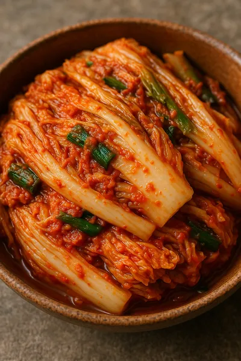
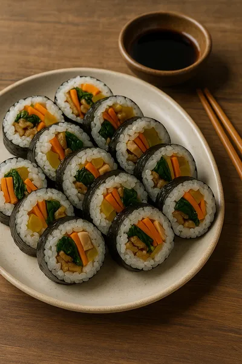

Japchae
El Japchae es un plato tradicional coreano que consiste en fideos transparentes salteados con verduras, carne y setas, todo sazonado con salsa de soya y aceite de sésamo.
Se sirve habitualmente en celebraciones como el Seollal (Año Nuevo Lunar) y el Chuseok (Festival de la Cosecha).
Es una opción saludable y versátil, representando la riqueza de la cocina coreana.
Kimchi
El kimchi es un plato hecho a base de verduras fermentadas, principalmente col napa y rábanos, con una mezcla de especias picantes.
Forma parte esencial de la dieta coreana y está profundamente arraigado en la cultura, especialmente durante el Kimjang.
Hoy es un superalimento global, valorado por sus beneficios para la salud digestiva.
Kimbap
Rollo de arroz sazonado y envuelto en alga nori, relleno de vegetales, carne o pescado.
Inspirado en el sushi japonés, pero con sabores coreanos distintivos.
Su nombre significa literalmente "alga (kim) + arroz (bap)".